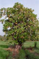
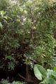
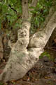
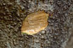
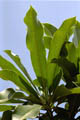
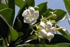
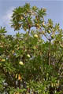
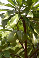
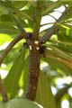
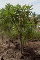

Common name in Tamil : Kat arali, kadama
Common name in Singhalese : Gon kaduru










Diagnostic characters
Botany & morphology
Reproductive biology
Ecology
Distribution
Uses
Moderate-sized or small tree in back-mangroves ; bark grey, soft and spongy. Leaves fleshy and bright green. Flowers large and white. Fruit ball-shaped, large and green. Latex white, from any part of the plant.
Trees with prominent leaf scars; branchlets whorled with leaves crowded at the end.
Leaves simple alternate, entire, lanceolate or oblanceolate, apex acute, base tapering, 12 - 30 x 3 – 7 cm, slightly coriaceous. Lateral veins and reticulate venation faintly raised on both surfaces; petiole 2 to 5 cm long.
Inflorescences terminal paniculate cymes.
Flowers large, regular, bisexual; calyx 5; corolla funnel shaped, 5 lobed, white with yellow eye at mouth; stamens inserted in the middle of corolla tube; anthers oblong-lanceolate not adnate to the style-apex.
Fruits fibrous drupe, rounded, smooth, green often tinged with pink when ripe; seeds one or two, ovoid, compressed.
Pollination by insects.
A back-mangrove associated species along brackish waters. It also occur in the inner reaches of tidal rivers where the salinity is typically very low.
Paleotropics. In Sri Lanka along the west coast.
Cultivated as ornamental trees.
Top of the page